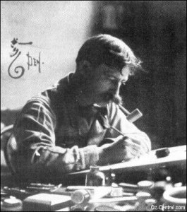
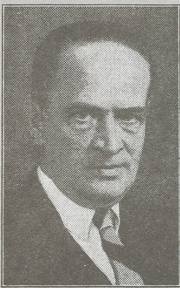
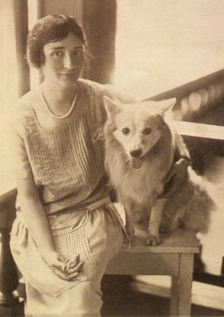
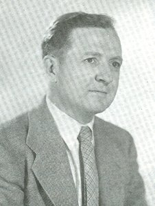
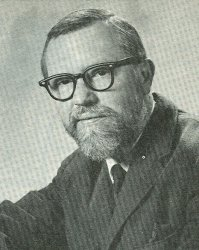

7. The Other Royal Historians and Illustrators of Oz
7.1. Who was W. W. Denslow?
7.2. Why was The Wonderful Wizard of Oz the only Oz book Denslow illustrated?
7.3. What else did Baum and Denslow collaborate on?
+ 7.4. What other Oz projects did Denslow work on?
7.5. Who was John R. Neill, and how did he get involved in Oz?
7.6. What are Neill's other Oz works?
7.7. Who was Ruth Plumly Thompson?
7.8. How did she get the job of continuing the Oz series?
+ 7.9. What other Oz stories has Thompson written?
7.10. Who was Jack Snow, and how did he get involved in Oz?
7.11. What are Snow's other Oz writings?
7.12. Who is Frank Kramer, and how did he get involved in Oz?
7.13. Who was Rachel R. Cosgrove, and how did she get involved in Oz?
7.14. What are Cosgrove's other Oz writings?
7.15. Who was Dirk, and how did he get involved in Oz?
7.16. Who are Eloise Jarvis McGraw and Lauren McGraw Wagner, and how did they get involved in Oz?
7.17. What other Oz writings have the McGraws produced?
7.18. Who was Dick Martin, and how did he get involved in Oz?
+ 7.19. Who is Eric Shanower, and how did he get involved in Oz?
7.20. Who else has written Oz books?
7.1. Who was W. W. Denslow?

William Wallace Denslow was born in Philadelphia on May 5, 1856. By the time he turned twenty, he was drawing advertising art and working for magazines and newspapers all over the country. He gained a national reputation, and set up shop in Chicago in the 1890s. There, he met L. Frank Baum, and the two helped inspire each other's creativity on a number of projects. He also did illustrations for Elbert Hubbard at his famous Roycroft Shop, and in general became one of the most well-known and prolific American artists of the turn of the century. He fell upon hard times after a while, however, and eventually died in obscurity in 1915. (It was falsely rumored at the time that he had committed suicide.)7.2. Why was The Wonderful Wizard of Oz the only Oz book Denslow illustrated?
Baum and Denslow had shared the copyright on The Wonderful Wizard of Oz and the rest of the books they had worked on together. Unfortunately, after a few years, they found they didn't always see eye-to-eye on everything, and also that they could both succeed without the other — both had many successful post-Wizard solo projects. Denslow also did some of his own work with Baum's characters, which did not please Baum. But the final nail in the coffin of their relationship proved to be over the 1902 musical stage version of The Wizard of Oz. Baum wrote the script, many of the songs, and was instrumental in lining up a producer. Denslow only designed the sets and costumes, and created some promotional art. Nevertheless, he contended that, as joint holder of the book's copyright, he should get half of the play's royalties. While he didn't get quite that much, he did get more than Baum felt he deserved. After his problems with Denslow, Baum vowed not to work with him again, nor to allow any of the artists on his books to hold any sort of rights to his characters and creations.
7.3. What else did Baum and Denslow collaborate on?
Baum and Denslow first worked together on Baum's privately printed book of verse, By the Candelabra's Glare, for which Denslow contributed two drawings. Their first joint public publishing project was Father Goose: His Book, a collection of Baum's verse illustrated by Denslow. Generally, Denslow drew a picture to go with Baum's poem, but in some cases it worked in reverse — Baum would write a poem to go with one of Denslow's illustrations. The book was a surprise best seller in 1899, but many give Denslow's art and design more credit for its success than Baum's poems. In 1900, The Songs of Father Goose came out, which was a volume of some of Baum's poems set to music by Alberta N. Hall; Denslow's illustrations were retained. (A third Father Goose book, Father Goose's Year Book, came out in 1907, but did not contain any artwork by Denslow.) In 1901, Denslow illustrated Baum's fantasy novel Dot and Tot of Merryland. Denslow also provided a new cover design, title page, and endpapers for Bobbs-Merrill's 1903 edition of The Wizard of Oz.
7.4. What other Oz projects did Denslow work on?
As joint copyright holder of The Wonderful Wizard of Oz, Denslow felt he was just as entitled to use the characters in his own work as Baum was, and so produced Oz projects of his own. He first used Baum's characters as his own in two "Father Goose" comic pages, published in newspapers in 1900. The first appearance of Oz characters in Denslow's own work was in a series of picture books. Denslow's Night Before Christmas shows a toy Tin Woodman peering out of Santa's bag. Denslow's A B C used the Scarecrow for the letter S, and the Tin Woodman for T (standing for tin). And Denslow's House That Jack Built shows the Scarecrow in the background as Jack works. In 1903, a small pamphlet entitled Pictures from the Wonderful Wizard of Oz was published, with Denslow's name prominent on the cover. This was made up of the unused color plates after the original publisher of The Wonderful Wizard of Oz, George M. Hill, went bankrupt. A new non-Oz story by Thos. H. Russell, tying the pictures together, was printed on the blank sides. In 1904, Denslow's Scarecrow and the Tin-Man was the latest addition to the Denslow collection of picture books, and details an incident where the pair escaped from the theater where they were performing to go out on the town. (This was during the successful run of The Wizard of Oz as a stage show.) This story was published both on its own and in a collection, Denslow's Scarecrow and the Tin-Man and Other Stories. Finally, Denslow wrote a comic page, "Denslow's Scarecrow and Tin-Man," which ran for several weeks in 1904-1905. (During this time, Baum's "Queer Visitors from the Marvelous Land of Oz" page — see question 6.8 — was also running.) The comic starred the Scarecrow, Tin Man, the Cowardly Lion, and, for its first two installments, Dorothy. The first two stories took place in Oz, but soon the characters found their way to America and had a number of adventures in that strange land. The series ended with them on their way out west. (Two unfinished pages depict their adventures with cowboys, and at a California flower show.) On all of these projects, Denslow received sole credit, and Baum was not mentioned at all. In 2005, Hungry Tiger Press collected all of the stories from the comic pages, along with the Denslow's Scarecrow and Tin-Man book, into one volume entitled The Scarecrow and the Tin-Man of Oz.
7.5. Who was John R. Neill, and how did he get involved in Oz?

John Rea Neill was born in 1877, and took to drawing at an early age. He was asked by Reilly and Britton to illustrate the new Oz book, The Marvelous Land of Oz, in 1904, and he went on to illustrate the rest of Baum's Oz books, some of his non-Oz titles, and all of Ruth Plumly Thompson's Oz books. Many Oz fans consider him to be the definitive illustrator of the Oz books, and he drew literally hundreds of characters. He also illustrated books for a number of other publishers, and drew for magazines, newspapers, and advertisements. When Thompson stepped down as Royal Historian of Oz, the publishers asked Neill if he'd like to write a book as well as illustrate it. He accepted, and wrote three more titles in the series (although an overenthusiastic editor at Reilly and Lee apparently rewrote much of his work). He had written the manuscript for a fourth book when he died in 1943. As sales of the Oz books had been dropping, and America's entrance into World War II brought about paper rationing, Reilly and Lee decided not to publish Neill's fourth book, and to put the series on hold until after the war.7.6. What are Neill's other Oz works?
The first Oz book to come out under Neill's name was The Oz Toy Book in 1915, a series of character portraits printed on cardstock so they could be cut out and made to stand. Unfortunately the publishers didn't clear this with Baum, causing some bitterness between Baum and Neill, despite the book being the publishers' idea. Baum feared that Neill, like Denslow before him, was trying to take credit for the creation of his characters. Reilly and Britton were able to placate Baum, and The Oz Toy Book was not reprinted and largely forgotten. It has now been reprinted in black and white, currently available from IWOC. The manuscript for Neill's fourth novel was kept by his family, and in 1995 it was edited and illustrated by Eric Shanower, and published as The Runaway in Oz by Books of Wonder. It is currently available from both Books of Wonder and from Shanower through Hungry Tiger Press.


7.7. Who was Ruth Plumly Thompson?

Ruth Plumly Thompson was born in Philadelphia in 1891 (although later in life she claimed to have been born in 1900). She was always good at entertaining younger children, and began writing nonsense stories and verse at a young age. She soon got a job writing a children's page for the Philadelphia Public Ledger, and became a prolific writer, mostly of short stories and poems. She left the Ledger to write the Oz books, turning out a book a year for nineteen years. She stopped writing Oz books as her imagination ran out, and out of frustration with Reilly and Lee for not publicizing the series enough. She was also frustrated by a dispute over her royalties. After retiring from Oz, Ruth went on to write for magazines. She created Perky Puppet for Jack and Jill magazine, and was an active writer the rest of her life. She died in 1976.
7.8. How did she get the job of continuing the Oz series?
William F. Lee, one of the partners in Reilly and Lee, was looking for someone to continue the Oz series after Baum's death. He saw Ruth's work in the Ledger, and offered her the job. Since this meant a steady income and support for her invalid sister, she accepted, a deal was struck with Baum's widow, and Ruth turned out nineteen books in nineteen years before her retirement as a regular contributor to the series. Since Thompson never met Baum, there is no truth to any of the rumors that she was Baum's niece or secretary, or otherwise got the job through her connection to him.
7.9. What other Oz stories has Thompson written?
Sometime in the 1960s, she had an idea for a new Oz story involving an astronaut dog. By that point, however, Reilly and Lee had all but vanished, and they felt the Oz series was too long, anyway. (She was not terribly happy when Reilly and Lee published Merry Go Round in Oz instead.) The manuscript lay untouched for a few years until IWOC expressed interest, and they published it in 1972 as Yankee in Oz. Four years later IWOC published The Enchanted Island of Oz (which was in production when Thompson died), an Ozzified expansion of one of Ruth's previously unpublished non-Oz novels. In 1992 IWOC published The Cheerful Citizens of Oz, a collection of her Ozzy poetry. Some of her Oz poems were also published by IWOC in The Wizard of Way-Up and Other Wonders, a collection of her short stories and poems. Another collection with some Oz material, Sissajig and Other Surprises, was published in 2003. All of these books are currently available from IWOC.


In addition to the books published by IWOC, Thompson wrote A Day in Oz, also known as Scraps of Oz, a play for department store book departments to use for advertising, in 1924 (and reprinted in Sissajig and Other Surprises); the script, adapted from Baum's Ozma of Oz, for the 1928 Jean Gros marionette show, The Magical Land of Oz; and numerous poems, short stories, and articles in The Baum Bugle, the IWOC journal. Oz fans may also be interested in one of her few non-Oz novels, The Curious Cruise of Captain Santa, as it was published by Reilly and Lee in 1926 and illustrated by John R. Neill. And yes, IWOC has reprinted it.
7.10. Who was Jack Snow, and how did he get involved in Oz?

Born in 1907 in Piqua, Ohio, Jack Snow was a lifelong fan of L. Frank Baum, and upon Baum's death Snow offered to take over writing the Oz series. Reilly and Lee turned him down, as he was only twelve at the time. Snow went on to write for radio, and worked for NBC for some time, but he never lost his interest in Baum and Oz, and amassed one of the finest Baum collections of the time. He finally got to see his own Oz book published in 1946, and three years later his second one came out. By this time the Oz series had fallen out of favor, however, and Snow's books did not sell well. Jack Snow died in 1956.7.11. What are Snow's other Oz writings?
 Reilly and Lee convinced Snow to write Who's Who in Oz in 1954. It was not a novel, but an encyclopedia of Oz characters, with short biographies and illustrations, as well as profiles of the authors and illustrators of the series to that point. It was the first Oz reference work, and one of the earliest non-fiction books about Oz. Although officially out of print, a 1988 reprint edition is currently available from IWOC. Snow also wrote a short story, "A Murder in Oz," which was originally written for, but eventually rejected by, Ellery Queen's Mystery Magazine. It was serialized in IWOC's journal, The Baum Bugle, after Snow's death, and published as a small pamphlet by Buckethead Enterprises of Oz in the 1990s (currently available from Tails of the Cowardly Lion and Friends). It is also included, along with some of Snow's short horror stories, in the anthology Spectral Snow, published in 1996 by Hungry Tiger Press. The Baum Bugle also published "The Crystal People," believed to be an excised chapter from The Shaggy Man of Oz. There have been persistent rumors of an unpublished Snow manuscript, Over the Rainbow to Oz, which involves either Polychrome (the rainbow's daughter, who first appears in The Road to Oz) or the early history of Oz, but if Snow wrote such a story, no part of the manuscript has ever been found.
Reilly and Lee convinced Snow to write Who's Who in Oz in 1954. It was not a novel, but an encyclopedia of Oz characters, with short biographies and illustrations, as well as profiles of the authors and illustrators of the series to that point. It was the first Oz reference work, and one of the earliest non-fiction books about Oz. Although officially out of print, a 1988 reprint edition is currently available from IWOC. Snow also wrote a short story, "A Murder in Oz," which was originally written for, but eventually rejected by, Ellery Queen's Mystery Magazine. It was serialized in IWOC's journal, The Baum Bugle, after Snow's death, and published as a small pamphlet by Buckethead Enterprises of Oz in the 1990s (currently available from Tails of the Cowardly Lion and Friends). It is also included, along with some of Snow's short horror stories, in the anthology Spectral Snow, published in 1996 by Hungry Tiger Press. The Baum Bugle also published "The Crystal People," believed to be an excised chapter from The Shaggy Man of Oz. There have been persistent rumors of an unpublished Snow manuscript, Over the Rainbow to Oz, which involves either Polychrome (the rainbow's daughter, who first appears in The Road to Oz) or the early history of Oz, but if Snow wrote such a story, no part of the manuscript has ever been found.
7.12. Who is Frank Kramer, and how did he get involved in Oz?
Very little is known of Frank Kramer. He was born in New York City in 1909, and after a career in business he turned to the more enjoyable profession of art. He first became known for his sports illustrations, and in 1946 became the first new illustrator of the Oz books in over forty years. He died in 1993.
7.13. Who was Rachel R. Cosgrove, and how did she get involved in Oz?
 Rachel R. Cosgrove was born in 1922 in Maryland into a family of book lovers. Among the many books they read were the Oz books, and so despite working as a pharmacologist, it only seemed natural to her to write an Oz book for her own and her mother's enjoyment. On a whim she sent a copy of the manuscript to Reilly and Lee, and although they weren't adding any new books to the series at the time, they gave her encouragement and comments. She made a few changes, then Reilly and Lee asked if they could publish it after all. The Hidden Valley of Oz, published in 1951, was Rachel Cosgrove's first published book, but far from her last, as she continued to write mysteries, romances, juveniles, and science-fiction. After marrying Norman Payes in 1954, her books were published under several variations of the name Rachel Cosgrove Payes, with some of her sci-fi published under the name E. L. Arch, an anagram of her first name. Rachel Cosgrove Payes died in 1998.
Rachel R. Cosgrove was born in 1922 in Maryland into a family of book lovers. Among the many books they read were the Oz books, and so despite working as a pharmacologist, it only seemed natural to her to write an Oz book for her own and her mother's enjoyment. On a whim she sent a copy of the manuscript to Reilly and Lee, and although they weren't adding any new books to the series at the time, they gave her encouragement and comments. She made a few changes, then Reilly and Lee asked if they could publish it after all. The Hidden Valley of Oz, published in 1951, was Rachel Cosgrove's first published book, but far from her last, as she continued to write mysteries, romances, juveniles, and science-fiction. After marrying Norman Payes in 1954, her books were published under several variations of the name Rachel Cosgrove Payes, with some of her sci-fi published under the name E. L. Arch, an anagram of her first name. Rachel Cosgrove Payes died in 1998.
7.14. What are Cosgrove's other Oz writings?
 Shortly after The Hidden Valley of Oz was published, she wrote another Oz story, but Reilly and Lee decided to pass on it, and it lay in her files for years. IWOC published it in 1993 as The Wicked Witch of Oz, under the name Rachel Cosgrove Payes. She also wrote an afterword to the IWOC reprint edition of The Hidden Valley of Oz. In 1995 she contributed a short story to Oz-Story 1, an anthology of Oz material edited by Eric Shanower, who illustrated The Wicked Witch of Oz, and David Maxine. Another of her short stories appeared in Oz-Story 3 in 1997, and part of her original manuscript for The Hidden Valley of Oz was published in Oz-Story 6 in 2000.
Shortly after The Hidden Valley of Oz was published, she wrote another Oz story, but Reilly and Lee decided to pass on it, and it lay in her files for years. IWOC published it in 1993 as The Wicked Witch of Oz, under the name Rachel Cosgrove Payes. She also wrote an afterword to the IWOC reprint edition of The Hidden Valley of Oz. In 1995 she contributed a short story to Oz-Story 1, an anthology of Oz material edited by Eric Shanower, who illustrated The Wicked Witch of Oz, and David Maxine. Another of her short stories appeared in Oz-Story 3 in 1997, and part of her original manuscript for The Hidden Valley of Oz was published in Oz-Story 6 in 2000.
7.15. Who was Dirk, and how did he get involved in Oz?

Dirk Gringhuis was born September 18, 1918 in Grand Rapids, Michigan. From a very early age, he wanted to be an artist. He studied in Chicago and New York, then returned to Michigan to take up his trade. He was first approached to illustrate The Shaggy Man of Oz, but his first and only published Oz work was for The Hidden Valley of Oz. At the time, he was also the head of the art department at Hope College in Holland, Michigan. He went on to a number of freelance jobs, worked as both a teacher and curator at Michigan State University, wrote some books of his own, and produced an educational television show about his home state. He died in 1973.7.16. Who are Eloise Jarvis McGraw and Lauren McGraw Wagner, and how did they get involved in Oz?

Lauren Lynn McGraw (left) and Eloise Jarvis McGraw
The McGraws are a mother and daughter from Oregon. Eloise Jarvis McGraw was an accomplished children's book writer, who won three Newbery Honor Awards and an Edgar from the Mystery Writers of America. She had been writing for about twenty years when she and her daughter, while reading The Scalawagons of Oz together, thought, "This isn't a proper Oz book," and the two of them set about to write one of their own. They submitted the manuscript to Reilly and Lee, who were interested to see how a new Oz book would be received after a dozen years, and in 1963 Merry Go Round in Oz was published, the fortieth Oz book. While Lauren McGraw Wagner — now using her maiden name, Lauren Lynn McGraw, both personally and professionally — went on to a career in art, Eloise continued to write until her death in 2000.
7.17. What other Oz writings have the McGraws produced?
After the success of their two new books by Ruth Plumly Thompson, IWOC asked Eloise if she'd be interested in writing a new Oz book for them. Since she had no other major projects going at the time, she agreed, contacted her daughter, and the McGraws wrote The Forbidden Fountain of Oz, published in 1980. Eloise also wrote a slightly fictionalized account of Baum's creation of Oz for Childcraft in the 1960s, called "The Magic Land" (reprinted in Oz-Story 2 in 1996), and submitted a story to Oziana, IWOC's fiction magazine, for its 1990 edition. A few Oz references have slipped into Eloise's other works, and she's contributed some articles to The Baum Bugle, and the introduction to a new edition of The Wizard of Oz published by Aladdin in 1999. Eloise Jarvis McGraw's first solo Oz novel, The Rundelstone of Oz, was first published in Oz-Story 6 in 2000, and as a book in 2001 (the latter with an introduction by her daughter), both from Hungry Tiger Press. She also edited Gina Wickwar's The Hidden Prince of Oz, published in 2000, for IWOC.


7.18. Who was Dick Martin, and how did he get involved in Oz?
Dickinson Payne Martin was born June 29, 1927 in Chicago, and was a lifelong resident of the Windy City. Inspired by John R. Neill's illustrations in the Oz books, he studied at several art colleges while still in high school. Martin's art appeared in magazines and newspapers, on greeting and playing cards, and on posters and advertisements, but he especially enjoyed illustrating books. He did a lot of illustrating work for Reilly and Lee in the 1960s, including The Visitors from Oz, adaptations of some of Baum's Oz books, and Merry Go Round in Oz. He also redesigned the Baum Oz books and wrote and illustrated an advertising newspaper, The Ozmapolitan. For IWOC, he illustrated a set of Oz maps (which he also helped to research and design), Yankee in Oz, The Enchanted Island of Oz, The Forbidden Fountain of Oz, and Animal Fairy Tales, as well as assembling two books of his own sketches, and writing and illustrating the novel The Ozmapolitan of Oz. He co-authored The Oz Scrapbook with David Greene, and Dover published three Oz-themed cut-out-and-make-it books that he designed. He was also an active Oz fan, who served IWOC as president, vice-president, editor of The Baum Bugle, convention auctioneer, and on the board of directors, among other roles. He amassed an amazing collection of Oz books and memorabilia, and he pioneered the bibliography of the Oz books that would result in the book Bibliographia Oziana. He died on Valentine's Day, 1990.
7.19. Who is Eric Shanower, and how did he get involved in Oz?
Although not an author or illustrator who has worked on any of the FF, Eric Shanower has illustrated Oz books by five of the Royal Historians, and written and illustrated many other published Oz works. Born in Florida on October 23, 1963, Eric Shanower wanted to write and draw Oz stories and comic books ever since he was six. After attending art school, he got his chance to do both with The Enchanted Apples of Oz, a graphic novel published by First Comics in 1986. This was soon followed by The Secret Island of Oz, The Ice King of Oz, and The Forgotten Forest of Oz. A fifth graphic novel, The Blue Witch of Oz, was put on hold when First ceased operation; it was later published by Dark Horse Comics. All five graphic novels are scheduled to be reprinted as a collection, Adventures in Oz, in 2006. Shanower also began to do work for IWOC, including writing and illustrating stories for Oziana, but most notably illustrating the Rachel Cosgrove Payes novel The Wicked Witch of Oz. He also wrote and illustrated The Giant Garden of Oz, and edited and illustrated John R. Neill's unpublished Oz book The Runaway in Oz, for Books of Wonder. He and his partner, David Maxine, founded Hungry Tiger Press, which from 1995 to 2000 published the annual Oz-Story anthology of new and reprinted Oz work. They have also reprinted some of Baum's and Thompson's rarer works, sheet music from old Oz stage musicals, and other items of interest to Oz fans, including three novels illustrated by Shanower, Paradox in Oz and The Living House of Oz by Edward Einhorn, and The Rundelstone of Oz by Eloise Jarvis McGraw. Besides his Oz work, Shanower has drawn and inked several comic books, including his own Age of Bronze, published by Image, for which he won the comics industry's Eisner award as best writer/artist in 2001 and 2003. He now lives in San Diego, California. You can find out more at his website, http://ericshanower.com/es/index.shtml.
7.20. Who else has written Oz books?
Lots and lots of people. Two of Baum's sons wrote books of their own (The Laughing Dragon of Oz by Frank J. Baum, published in 1935 as one of the earliest Big-Little Books; and The Dinomonster of Oz by Kenneth Gage Baum, which finally saw print in 1991, published by Buckethead Enterprises of Oz), and his great-grandson Roger S. Baum has now written a number of Oz books as well. Most authors of Oz books today, however, are just fans who write for fun, since there isn't enough of an audience anymore to actually make a lot of money off the books.

 |
|  Section 8
Section 8 "There's no place like the home page..."
"There's no place like the home page..."